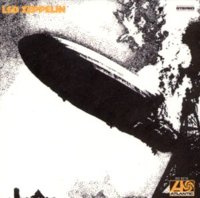
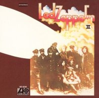
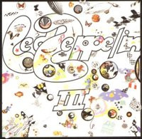
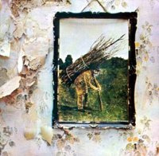

Led Zeppelin (1969)
Led Zeppelin II (1969)
Led Zeppelin III (1970)
Led Zeppelin IV (1971)
Houses of the Holy (álbum) (1973)
Physical Graffiti (álbum) (1975) - 2CD
Presence (álbum) (1976)
In Through the Out Door (álbum) (1979)
The Song Remains the Same (1976) - 2CD & Live
Coda (1982) - Recopilación con grabaciones inéditas (después del fin de la banda)
Profiled (1990)
Box Set (1990)
Box Set II (1993)
Remasters (1990)
Complete Studio Recordings (1993)
BBC Sessions (1997)
Early Days: The Best of Led Zeppelin, Vol. 1 (1999)
Latter Days: The Best of Led Zeppelin, Vol. 2 (2000)
How the West Was Won (2003)

Good Times Bad Times 2:46
(Page, J.P.Jones y Bonham)
Babe I’m Gonna Leave You 6:41
(Anne Bredon, Page y Plant)
You Shook Me 6:28
(Willie Dixon y J.B. Lenoir)
Dazed and Confused 6:26
(Page)
Your Time Is Gonna Come 4:14
(Page y J.P.Jones)
Black Mountain Side 2:05
(Page)
Communication Breakdown 2:27
(Page, J.P.Jones y Bonham)
I Can’t Quit You Baby 4:42
(Willie Dixon)
How Many More Times 8:28
(Page, J.P.Jones y Bonham)
"Led Zeppelin" contiene momentos clásicos de la banda como la admirable balada acústica de tintes folk "Babe I'm gonna leave you", una de las piezas más bellas ejecutadas por el grupo británico que habían rescatado del catálogo de la cantante de folk Anne Bredon.
El estilo acústico es revisionado de nuevo en "Black mountain side", mientras que el frenesí de la electricidad nos otorga sobresalientes muestras de su exacerbada energía en la fiera "Communication Breakdown" o la pegadiza "Good times Bad Times".
La excelente versión del tema de Dixon "You shook me" es una rendición al blues de Chicago, perceptible en otras notables canciones como "How many more times" o "I can't quit you", otro cover del gran bluesman.
El compendio del clima musical creado por Led Zeppelin se encuentra en dos de los temas más destacados del álbum, el hard rock con elementos psicodélicos de "Dazed and confused" y la infravalorada "Your time is gonna come", una elegante pieza pop-rock con un excelente trabajo en los teclados de John Paul Jones y un estribillo realmente contagioso

Whole Lotta Love 5:34
(Page, Plant, J.P.Jones y Bonham)
What Is and What Should Never Be 4:44
(Page y Plant)
The Lemon Song 6:19
(Page, Plant, J.P.Jones y Bonham)
Thank You 4:47
(Page y Plant)
Heartbreaker 4:14
(Page, Plant, J.P.Jones y Bonham)
Living Loving Maid (She’s Just a Woman) 2:39
(Page y Plant)
Ramble On 4:23
(Page y Plant)
Moby Dick 4:21
(Page, Plant, J.P.Jones y Bonham)
Bring It On Home 4:20
(Page y Plant)
Impresionante segundo álbum de Led Zeppelin. Si el primero exhibía su pericia en explotar con sapiencia el blues y rock de bandas y solistas como Jimi Hendrix, Cream, Willie Dixon o Jeff Beck, el segundo apuntala con firmeza su enorme contribución al mundo de la música moderna y define con autoridad su magisterio en la construcción y ejecución de piezas hard-blues-rock de alto voltaje y alternancia acústico/eléctrica.
Sus detractores les acusan a menudo de latrocinio y hurto a grandes nombres del blues pero, partiendo del fundamento de esas referencias y de la irrefutable ascendencia de esos esenciales nombres, es también innegable la instauración de un nuevo orden auditivo desarrollado en el empaque otorgado a sus raices bluesy con un trabajo arrebatador en la edificación de riffs, musculatura rítmica y sobre todo, singular creación de atmósferas, como la conseguida con el clima sexual emanado de "Whole lotta love", gran clásico (número 4 en los EEUU) en donde utilizan el theremin y en donde recogen textos del "You need love" de Willie Dixon.
Su musculado sentido del ritmo se exhibe en "Heartbreaker" (con un glorioso riff guitarrero de Page) y en el enérgico hard-rock de "Living loving maid", mientras que la pasión por el blues asoma en "Lemon song" (una canción basada en el tema "Killing Floor" de Howlin' Wolf que despliega un soberbio trabajo de Jones al bajo) o "Bring it on home" (donde recogen claros influjos de Sonny Boy Williamson).
Las baladas blues-rock destacan con "What is and what should never be" y "Thank you", hermoso tema dedicado por Robert Plant a su esposa Maureen que comparte espacios acústicos con la tolkieniana "Ramblin on".
Uno de los momenos álgidos del LP es la espectacular "Moby dick", un tema derivado de una canción de Sleepy John Estes ("The girl I love, She got long curly hair") que contiene un memorable solo de Bonzo.

Immigrant Song 2:23
(Page y Plant)
Friends 3:54
(Page y Plant)
Celebration Day 3:28
(Page, Plant y J.P.Jones)
Since I’ve Been Loving You 7:24
(Page, Plant y J.P.Jones)
Out On The Tiles 4:05
(Page, Plant y Bonham)
Gallows Pole 4:56
(Tradicional arreglada por Page yPlant )
Tangerine 2:57
(Page)
That’s The Way 5:37
(Page y Plant)
Bron-Y-Aur Stomp 4:16
(Page, Plant y J.P.Jones)
Hats Off To (Roy) Harper 3:42
(Tradicional arreglada por Charles Obscure)
Uno de los trabajos menos sobresaliente del grupo de rock Led Zeppelin, en el que encontraron mayor acomodo para sus propuestas más acústicas.
A pesar de ello, los mejores esfuerzo del Lp son proporcionados por sus piezas eléctricas, la imponente y bulliciosa "Inmigrant Song", el rock cimbreante de "Celebration day"; "Since I've been loving you", una extraordinaria balada blues con una portentosa factura vocal de Plant y "Out on the tiles", un tema sensacional con un mastodóntico e imaginativo riff.
El lado acústico también exhibe su magisterio musical, atrapando la belleza del folk británico con piezas como "That's the way", la tradicional "Gallows pole", "Friends", tema con sabor oriental y la mágica joya "Tangerine", una de las canciones más hermosas jamás compuestas por Led Zeppelin.
El aroma country de la estimable "Bron-y-aur stomp" y el blues tedioso y fallido de "Hats of to (Roy) Harper" culminan este álbum, que proporcionó nuevas perspectivas a la carrera del legendario cuarteto británico.

Black Dog
(Page/Plant/Jones) - 4:54
Rock and Roll
(Page/Plant/Jones/Bonham) - 3:40
The Battle of Evermore
(Page/Plant) - 5:51
Stairway To Heaven
(Page/Plant) - 8:03
Misty Mountain Hop
(Page/Plant/Jones) - 4:38
Four Sticks
(Page/Plant) - 4:44
Going to California
(Page/Plant) - 3:31
When the Levee Breaks
(Page/Plant/Jones/Bonham/Memphis Minnie) - 7:07
El cuarto álbum de la banda Led Zeppelin, el cual no tiene título, es conocido por varios nombres distintos: "Zoso", "Led Zeppelin IV", "Runes", "Four Symbols", "Four", "Sticks" o incluso "Unnamed". El álbum no tiene un título oficial que pueda ser pronunciado o escrito como caracteres habituales de texto.
La reacción al tercer disco de Led Zeppelin fue, en su momento, bastante tibia. La crítica esperaba un sonido más duro, y los fans reclamaban que el grupo siguiera por el camino marcado en el II.
El resultado superó las expectativas. Para la mayoría de los fans y para la crítica, el cuarto álbum es el mejor de Led Zeppelin (algunos fans prefieren Physical Graffitti, quizás por ser doble), y según la crítica, la banda nunca volvería a llegar al nivel que alcanza en este disco.
Fue lanzado en 1971 y vendió 15 millones de copias en poco tiempo, estableciendo al grupo como una mega-banda. Con el tiempo, ha llegado a vender 22 millones de copias, convirtiéndose en el segundo álbum más vendido de los años 1970, sólo por detrás de The Wall, y en uno de los más vendidos de todos los tiempos.
El álbum incluye temas como Black Dog, When the Levee Breaks, Going to California. Pero el más importante es sin duda Stairway To Heaven, el cual todavía es considerado la pieza definitiva de la década de los años 70 y la inspiración para demasiadas revelaciones de adolescentes para procesar con la mente humana.
Este álbum, llamado comúnmente Led Zeppelin IV, fue el LP más vendido de la banda y actualmente está en la ubicación nº 4 de los álbumes más vendidos de la historia según la RIAA (Recording Industry Association of America). Desde luego este disco es legendario, casi mitológico, con una historia muy particular detrás de cada pequeño detalle.
Para empezar, su título. Por razones de continuidad, todo el mundo tiende a llamarlo Led Zeppelin IV, aunque esto no es del todo riguroso. En su versión original, no había absolutamente NADA escrito en el disco que permitiese identificarlo, salvo la frase "Produced by Jimmy Page" en la funda interior. La sensación de misterio que encierra la edición en vinilo es formidable, algo que se ha perdido completamente con la edición en CD (para fans de Led Zeppelin es importante coleccionar copias en vinilo de este disco, ya que son un pedazo de historia).
Para aumentar más el misterio, en la funda también aparecían unos extraños símbolos únicos, que ahora sabemos que cada uno es, algo así, como una firma de cada uno de los integrantes de la banda.